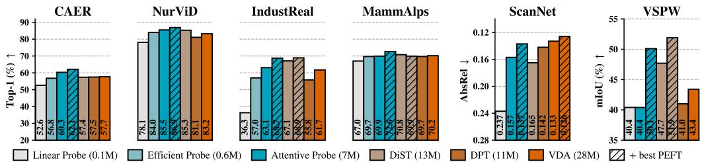

6 月 4 日：$A^2$ 等视觉表征论文归档
本页按日期归档近期论文，保留优先级、主题、来源与方法线索，方便回看同一批工作的研究脉络。
先读 $A^2$。直接分析自监督 ViT 注意力定位的逆 scaling 现象，并用小模型定位 + 大模型嵌入做无训练增强。 其余论文按 P1/P2 与主题顺序扫读，重点看方法图、消融设置和是否能迁移到通用视觉表征。
论文索引
 P0
P0
$A^2$: Smaller Self-Supervised ViTs Localize Better than Larger Ones
高相关；详见方法、贡献和实验边界。
方法：直接分析自监督 ViT 注意力定位的逆 scaling 现象，并用小模型定位 + 大模型嵌入做无训练增强
 P0
P0
IdEst: Assessing Self-Supervised Learning Representations via Intrinsic Dimension
高相关；详见方法、贡献和实验边界。
方法：用 MST intrinsic dimension 作为 SSL 表征质量代理，目标是减少 linear probe 成本和超参敏感性
 P1
P1
PRISM: Synergizing Vision Foundation Models via Self-organized Expert Specialization
高相关；详见方法、贡献和实验边界。
方法：面向多个 VFM 的模块化 MoE 蒸馏/融合，处理 monolithic distillation 的负迁移
 P1
P1
Beyond Compression: Quantifying Spectral Accessibility in Vision Representations
高相关；详见方法、贡献和实验边界。
方法：用频域 recoverability 诊断 CLIP/DINOv2 表征在投影、池化和层深中的信息损失
 P1
P1
Formalizing the Binding Problem
中高相关；详见方法、贡献和实验边界。
方法：用信息论 probing 测量 ViT 表征是否知道“哪些属性属于同一对象”，补充全局几何指标
 P2
P2
Visual Instruction Tuning Aligns Modalities through Abstraction
中高相关；详见方法、贡献和实验边界。
方法：说明视觉 instruction tuning 主要把视觉特征接入 LLM 中间语义层，对多模态表征对齐有诊断价值
 P2
P2
Cosmos 3: Omnimodal World Models for Physical AI
中高相关；详见方法、贡献和实验边界。
方法：大规模 omnimodal world model 同时处理语言、图像、视频、音频和 action，是通用视频/世界模型预训练的重要系统信号

P3Where Do We (Not) Need Temporal Context in Low-Resource Video Task Adaptation?
中相关；详见方法、贡献和实验边界。
方法：系统比较 image-pretrained 与 video representation 的 PEFT/probing，回答低资源视频适配中 temporal context 放在哪里
 P3
P3
Attend to Anything: Foundation Model for Unified Human Attention Modeling
中相关；详见方法、贡献和实验边界。
方法：统一图像、视频、音视频注意力/显著性建模，虽偏任务模型，但可作为视觉 attention 表征基准
 扫读
扫读
Benchmarking Visual State Tracking in Multimodal Video Understanding
中相关；详见方法、贡献和实验边界。
方法：VSTAT 评测长视频状态追踪，揭示 MLLM 文字推理正确但视觉事件感知不足的问题